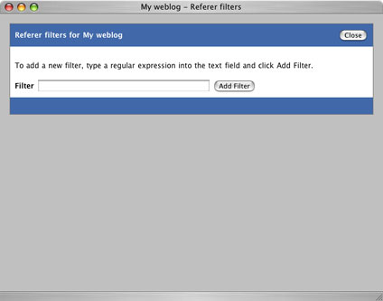

|
Pebble keeps track of your blog referrers - those websites that have links to your blog. Typically, when a user clicks on a link to your blog from another website, the URL of that website is included in the underlying http request and Pebble keeps a note of it.
Viewing Referers
To see your referrers for the current day, just click the Statistics image on the right side of the page. In addition to this, it is possible to see the number of referrers that you have had for any specific month or year. To do this, just click on the appropriate links on the subsequent page(s).
Referer Filters
Referers can be very useful indicators, but it is possible for them to be spoofed as any arbitrary URL. The reasons for doing this include companies trying to get free advertising by getting their URLs onto your website or trying to get better rankings in the search engines. After all, the more pages that reference their websites, the higher up the ranks their websites will appear in places like Google.
While this is generally harmless, it can be annoying and can skew your statistics. In addition to this, the links are often of an adult nature or simply unrelated to your blog. For this reason, Pebble allows you to filter specific referrers from showing in your list. To do this, click the Referer filters link once you have logged in. This opens a popup window in which filters can be defined.
The filters are just regular expressions. For example, to stop all Google searches from showing up in your referrer list would require a filter of .*google.*. To add a filter, enter the regular expression in the textfield and click the Add Filter button.
|